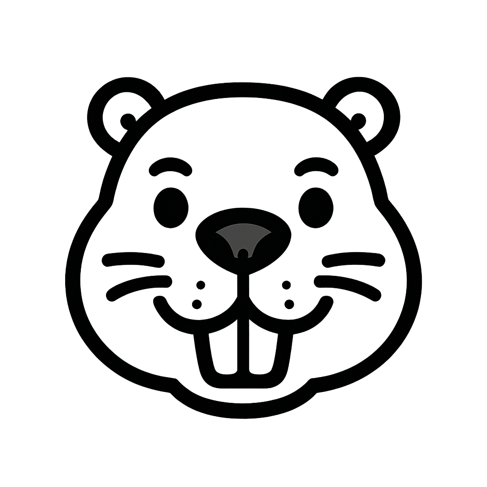
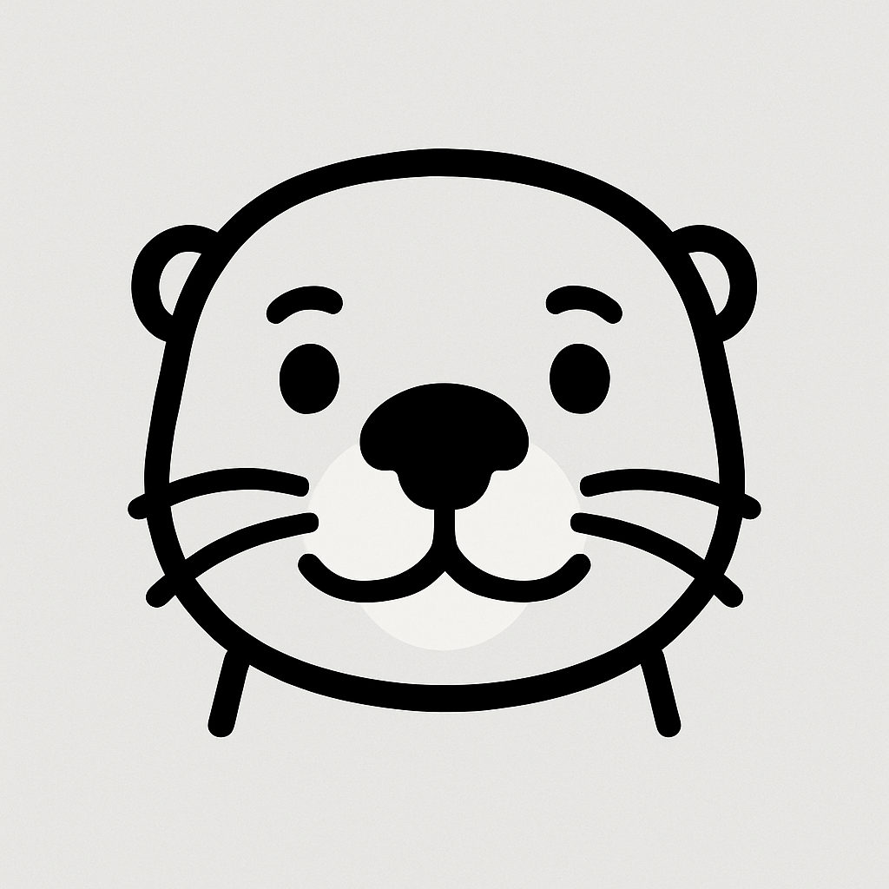
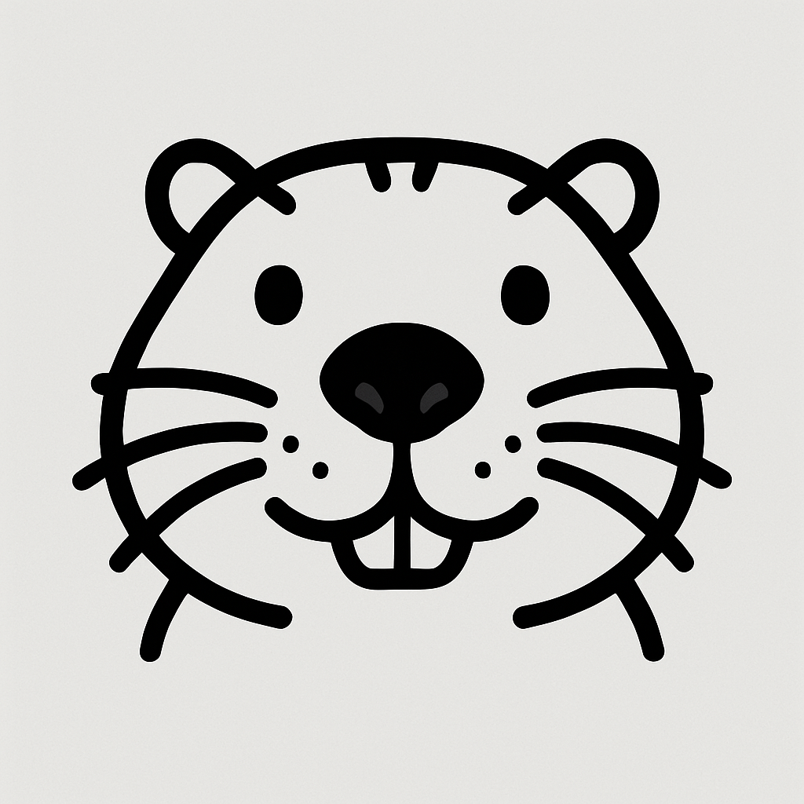

Interactive Identifier
At-a-Glance Comparison

Beaver
- ●Tail: Wide, flat, paddle-like, and scaly. The most defining feature.
- ●Body: Very large and robust (40-60+ lbs). Looks chunky.
- ●Swimming: Swims with its head, back, and rump visible above water. A loud tail slap on the water means danger!
- ●Signs: Look for dams, lodges made of sticks and mud, and gnawed/felled trees.

River Otter
- ●Tail: Long, thick at the base, and tapering to a point. Used like a rudder.
- ●Body: Long, slender, and cylindrical (10-30 lbs). Looks like a sleek tube.
- ●Swimming: Very playful and agile. Often dives and resurfaces. Only its head is typically visible when swimming slowly.
- ●Signs: Lives in dens near the water's edge (often old beaver lodges). Look for "slides" on muddy banks and fish scales in their droppings (scat).

Muskrat
- ●Tail: Long, thin, and flattened vertically (side-to-side). Wiggles back and forth when swimming.
- ●Body: Small and compact, like a small cat or large rat (2-4 lbs).
- ●Swimming: Often swims with its whole body, including its tail, visible on the surface.
- ●Signs: Builds "huts" from cattails and reeds in marshes. Creates "runs" or channels through aquatic vegetation.